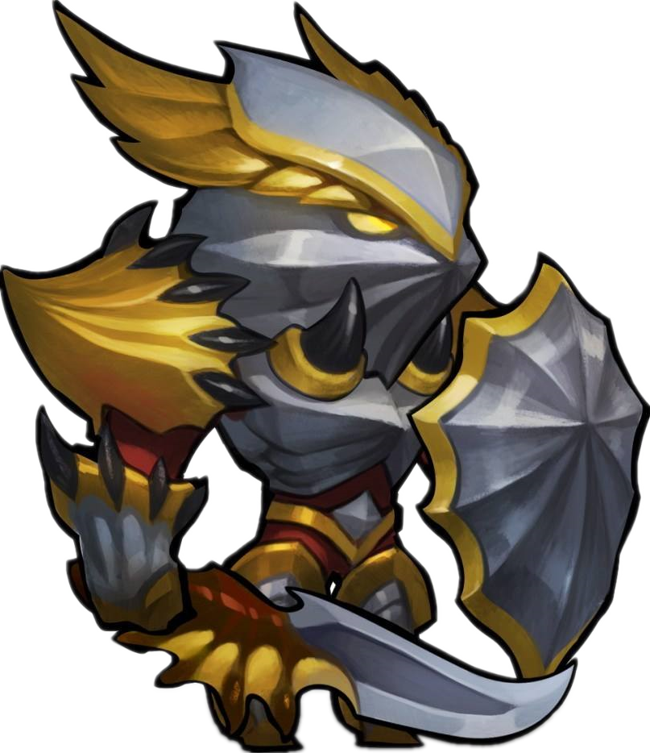

英雄简介
前排半肉半输出型英雄，变龙后攻击带有恐怖的火焰和溅射效果。前排半肉半输出型英雄，变龙后攻击带有恐怖的火焰和溅射效果。
龙骑士在近身距离猛击对手，造成小额伤害和长时间晕眩。龙形态下，攻击范围更大并且击退更远。
向面前吐出一团火焰，对敌方造成范围伤害。龙形态的伤害范围更大。向面前吐出一团火焰，对敌方造成范围伤害，龙形态的火焰范围更大
龙骑士变身为龙，拥有附带燃烧效果的远程攻击能力，并且有100%溅射效果。随着身形的变大，各个技能的作用范围也变得更远。
龙骑士身上所流的龙族之血使他有更高的魔抗和持续的生命回复能力。提升【90】点魔抗，提升【270】点每秒生命值回复。